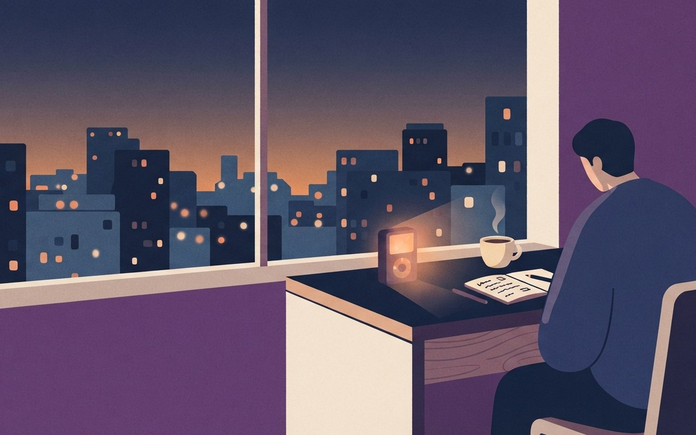
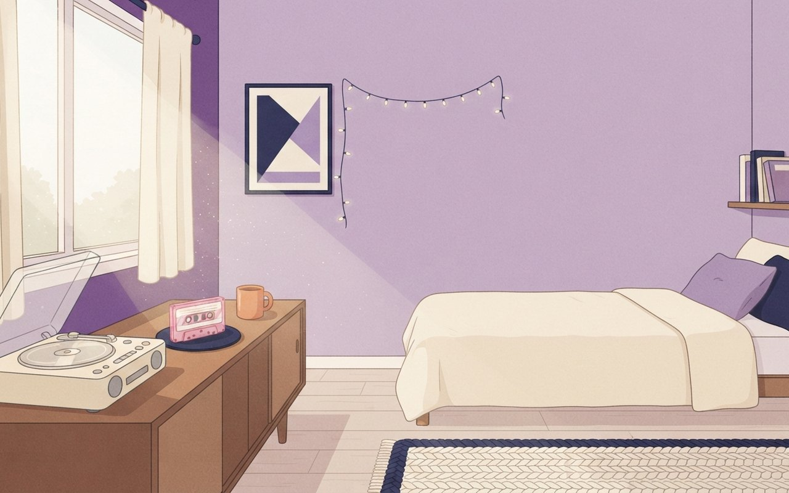
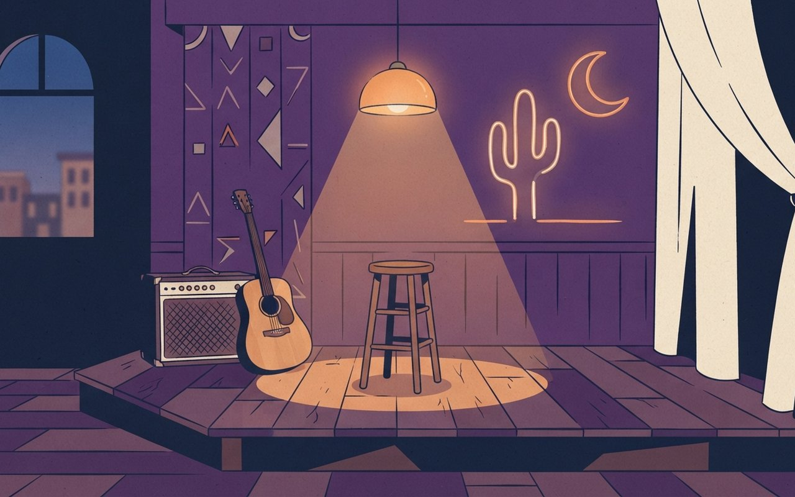

2026년 10월 24일 토요일6 Picks · AI 보컬 · 역주행 · 올드팝 · 컨트리 · 클래식
가사는 사람이 쓰고 AI가 부른 곡이 멜론 3위에 올랐고, 2년 전 노래 리센느의 「LOVE ATTACK」은 1위, 18년 전 카라의 원곡 「Pretty Girl」은 2위를 찾았습니다. 2018년 곡이 빌보드 핫100 첫 톱10에 들었고, 21일 별세한 존 앤더슨의 1983년 곡과 내일 서울에서 연주될 베토벤 4번을 이어 듣는 한 주입니다.
🎧 듣기 · 약 2분
🎧 낭독 원고 보기
10월 24일 토요일, 음악 브리프입니다. 이번 주 주제는 다시 찾아 듣는 노래입니다. 여섯 곡을 소개합니다.
AI가 부른 노래가 멜론 3위까지 올랐습니다. 가상 가수 머무르의 「꿈꾸던 어른이 되었나요?」는 9월 14일 96위로 들어와 10월 13일 3위까지 올랐습니다. 가사는 사람이 쓰고 작곡과 가창은 AI 서비스 수노가 맡았습니다. 어른이 된 뒤에도 이어지는 불안과 피로를 담은 가사가 공감을 얻었다는 분석이 있습니다. 음저협은 AI 활용 음악의 신탁 등록을 보류하고 있습니다.
두 번째는 두 해 전 노래의 1위입니다. 리센느의 「LOVE ATTACK」은 2024년 9월 멜론 일간 904위로 처음 들어왔고, 22개월 뒤인 올해 7월 8일 톱100 1위에 올랐습니다. 새 미니 4집은 11월 3일에 나옵니다.
이어서 들을 곡은 원곡입니다. 카라의 「Pretty Girl」은 2008년 곡으로, 당시 음악방송 1위를 하지 못했습니다. 리센느가 7월에 리메이크해 활동 중 최고 4위를 했고, 9월 13일에는 멜론 2위였습니다. 「LOVE ATTACK」과 이어 들으면 구도가 보입니다.
미국에서는 도미닉 파이크의 「Babydoll」이 빌보드 핫100 10위에 올랐습니다. 2018년 곡이 올해 다시 바이럴되며 8년 만에 처음 톱10에 들었습니다.
컨트리 가수 존 앤더슨의 부고가 21일 가족을 통해 전해졌습니다. 향년 71세입니다. 대표곡 「Swingin'」은 1983년 CMA 올해의 싱글을 받았고, 그는 2024년 컨트리 음악 명예의 전당에 올랐습니다. 1983년 올해의 싱글을 받은 이 곡으로 그를 기억해 보세요.
마지막은 클래식입니다. 25일 서울 예술의전당에서 빈 필하모닉 내한 공연이 열리고, 조성진이 베토벤 피아노협주곡 4번을 협연합니다. 지휘자 소키에프는 4번이 친밀하고 서정적이라고 말했습니다. 지휘자는 3번과 5번과 비교하며 이렇게 설명했습니다. 공연 정보는 바뀔 수 있으니 공식 안내를 확인하세요.
지금까지 10월 24일 음악 브리프였습니다. 곡마다 자세한 내용과 출처는 카드에서 확인하세요. 즐거운 감상 되세요.
Playlist 1 — AI 보컬곡
歌
AI 보컬
가사는 사람이, 노래는 AI가 — 「꿈꾸던 어른이 되었나요?」 멜론 3위까지 올랐다
가상 가수 머무르의 「꿈꾸던 어른이 되었나요?」는 6월 23일 발매됐다. 멜론 톱100에는 9월 14일 96위로 처음 들어왔고 10월 2일 18위, 10월 13일 3위까지 올랐다. 코리아헤럴드는 이 3위가 AI가 부른 곡의 멜론 톱100 최고 순위라고 보도했다(이슈인사이트 인용, 독립 검증은 아님).
가사는 사람이 쓰고 기본 작곡과 가창은 생성형 AI 플랫폼 수노(Suno)가 맡았다. 제작진은 명령어를 여러 차례 고치고 소스를 더해 완성도를 높였다. 머니투데이에 따르면 21일 확인한 멜론·지니 누적 재생은 약 1,424만 회이고, 한국음악저작권협회는 AI 활용 음악의 신탁 등록을 보류하고 있다.
발매2026.6.23 · 가상 가수 머무르 · 가사 사람 / 작곡·가창 수노(Suno)
멜론 톱1009/14 96위(첫 진입) → 10/2 18위 → 10/13 3위
재생멜론·지니 누적 약 1,424만 회 (21일 확인)
저작권음저협 AI 활용 음악 신탁 등록 보류 중
🎧 알고 들으면 달라지는 것
한 보도는 어른이 된 뒤에도 이어지는 불안과 피로를 담은 가사가 청취자 공감을 얻었다고 분석했다. 노래는 AI가 불렀지만 가사는 사람이 썼다. 그래서 이 곡은 목소리보다 가사가 누구의 이야기인지에 귀를 두고 들을 만하다. 편곡·악기는 기사에 없어 적지 않았다.
이슈인사이트 — 멜론 순위·제작 방식머니투데이 — 누적 재생·신탁 보류이슈인사이트(10/20)·머니투데이(10/23 08:06) · 순위 흐름·제작 방식은 이슈인사이트, 누적 재생·음저협은 머니투데이 · 최고 순위 보도는 코리아헤럴드를 인용한 이슈인사이트 기사 기준 · 곡 장르·편곡은 기사에 없음 (확인 2026-10-24)
어른의 피로를 노래한 AI 곡, 멜론 3위
가사는 사람이 썼어요. 멜론 톱100에 9월 14일 96위로 들어와 10월 13일 3위까지 올라갔어요. 노래는 AI가 불렀어요.
A tired office worker's desk by a window at dusk, a small old music player glowing beside a coffee cup, city lights outside, warm calm mood, no text

Playlist 2 — 역주행
逆
역주행
2년 전 노래가 1위로 — 리센느 「LOVE ATTACK」, 멜론 일간 904위에서 22개월 만에
리센느의 「LOVE ATTACK」은 2024년 9월 멜론 일간차트 904위로 첫 진입했다. 2026년 5월 28일 98위로 다시 들어왔고, 6월 30일 톱100에서 5위, 7월 8일 1위에 올랐다. 기사는 첫 진입부터 1위까지 약 22개월이 걸렸다고 설명했다(이슈인사이트).
기사는 역주행의 계기로 멤버 원이의 개인 채널 영상이 숏폼으로 퍼진 것을 짚었다. 소속사 더뮤즈엔터테인먼트는 새 미니 4집 《PULSE》를 11월 3일 낸다고 발표했다.
이 곡은 첫 진입이 904위였다가 22개월 뒤 1위가 된 노래라는 점이 듣는 포인트다. 신곡이 아니라 두 해 전 곡을 지금 다시 찾아 들은 사람들이 만든 순위다. 작곡·편곡 크레딧은 기사에 없어 적지 않았다.
이슈인사이트 — 리센느 역주행 경과이슈인사이트 단일 출처(입력 10/11, 수정 10/21 08:50) · 멜론 순위 기록은 기사 기준, 멜론 차트 원문은 미확인 · 논란 부분은 공식 확인 없음 (확인 2026-10-24)
2년 전 노래가 1위로, 리센느 LOVE ATTACK
2024년 9월 멜론 일간 904위로 첫 진입한 곡이에요. 22개월 뒤인 7월 8일 톱100 1위에 올랐어요. 11월 3일 새 미니 4집이 나와요.
A rooftop at night in a city, a girl group-style silhouette-free scene with glowing stage lights and a vintage cassette player on a ledge, retro pop mood, no people, no text
Playlist 3 — 원곡
原
원곡
원곡은 음악방송 1위를 못 했다 — 카라 「Pretty Girl」, 18년 뒤 리센느 리메이크로 멜론 2위
카라의 「Pretty Girl」은 2008년 두 번째 미니앨범 타이틀곡이다. 기사에 따르면 당시 음악방송 1위는 하지 못했다. 리센느가 이 곡을 리메이크해 2026년 7월 8일 오후 6시 싱글로 냈다(이슈인사이트).
리메이크는 발매 당일 멜론 톱100에서 22위, 12위, 10위로 올랐고 7월 활동 기간 최고 순위는 4위였다. 9월 13일 오후 11시 기준 멜론에서 「LOVE ATTACK」이 1위, 「Pretty Girl」이 2위였다.
원곡카라 「Pretty Girl」 · 2008 두 번째 미니앨범 타이틀 · 당시 음악방송 1위 못 함
리메이크리센느 · 2026.7.8 18:00 싱글 · 당일 멜론 22위→12위→10위
최고 순위7월 활동 중 4위
9/13 23시 기준멜론 「LOVE ATTACK」 1위 · 「Pretty Girl」 2위
🎧 알고 들으면 달라지는 것
앞 카드의 「LOVE ATTACK」과 이 곡을 이어서 들으면 한 그룹의 두 곡이 멜론 1·2위를 나눠 가진 구도를 귀로 확인할 수 있다. 원곡은 18년 전 곡이고 리메이크가 새 순위를 만들었다는 점이 포인트다. 두 버전의 편곡 차이는 기사에 없어 적지 않았다.
이슈인사이트 — 리메이크·순위이슈인사이트 단일 출처(입력 10/11, 수정 10/21) · 7월 최고 4위는 기사가 CBC 뉴스를 인용한 수치 · 앞 카드와 같은 기사를 쓴 두 번째 카드 · 원곡 크레딧은 비공식 자료뿐이라 적지 않음 (확인 2026-10-24)
18년 전 카라의 곡, 리센느 손에 멜론 2위
카라의 Pretty Girl은 2008년 곡으로 당시 음악방송 1위를 못 했어요. 리센느 리메이크는 7월 활동 중 최고 4위였고, 9월 13일 2위였어요.
A teen-pop styled bedroom with a retro CD player, plain pastel walls, a pink cassette tape and sunlight, nostalgic mood, no people, no text

Playlist 4 — 첫 톱10
十
핫100 진입
2018년 곡이 8년 만에 빌보드 핫100 10위 — 도미닉 파이크 「Babydoll」, 첫 톱10
10월 24일자 빌보드 핫100에서 도미닉 파이크의 「Babydoll」이 10위로 올라 그의 첫 톱10이 됐다. 이 곡은 2018년 발매곡으로, 올해 다시 바이럴됐다고 기사는 전했다. 라디오 송 차트에서도 상위 5위 안에 들었다(빌보드 기사의 Yahoo 게재본).
순위 집계 기간은 10월 9~15일이다. 기사에는 이전 주 순위와 바이럴 경로(어느 플랫폼에서 퍼졌는지)가 나오지 않는다.
곡도미닉 파이크 「Babydoll」 · 2018년 발매
핫10010/24일자 10위 · 첫 톱10
라디오 송 차트상위 5위 안 진입 (정확한 순위는 기사에 없음)
집계10/9~10/15 (Luminate 집계)
🎧 알고 들으면 달라지는 것
8년 전 곡이 처음으로 톱10에 든 사례라 발매 연도와 차트 연도가 다른 곡을 찾는 재미가 있다. 기사에 장르·편곡 설명은 없어 적지 않았다.
Yahoo(빌보드 기사) — 핫100 10위단일 출처(빌보드 하이라이트 기사의 Yahoo 게재본, 10/20 17:19 UTC) · 이전 주 순위·스트리밍 수치는 본문에 없어 뺌 · 빌보드 원문은 접속이 막혀 미열람 (확인 2026-10-24)
8년 전 곡의 반전, 핫100 첫 톱10
도미닉 파이크의 Babydoll이 빌보드 핫100 10위로 올랐어요. 2018년 곡이 8년 만에 처음 톱10에 들었어요. 라디오 차트도 상위 5위예요.
A late-night highway diner window with a jukebox glowing and a vinyl record on the counter, neon reflections on rainy glass, indie pop mood, no people, no text
Playlist 5 — 명곡
悼
컨트리 명곡
「Swingin'」으로 1983년 올해의 싱글 — 컨트리 명예의 전당 존 앤더슨, 71세로 별세
컨트리 가수 존 앤더슨의 부고가 21일 가족의 공식 SNS를 통해 전해졌다. 향년 71세다(WSMV). 그의 대표곡 「Swingin'」은 1위 히트곡이 됐고 1983년 CMA 올해의 싱글을 받았다(CBS News).
그는 2024년 컨트리 음악 명예의 전당에 헌액됐고 2014년에는 내슈빌 작곡가 명예의 전당에도 올랐다. 대표곡으로는 「Straight Tequila Night」「Seminole Wind」도 꼽힌다. 별세 며칠 전 일요일에는 명예의 전당 행사에 참석했다.
수상1983 CMA 올해의 싱글 「Swingin'」 · CMA 호라이즌상(수상 연도는 기사에 없음)
헌액2014 내슈빌 작곡가 명예의 전당 · 2024 컨트리 음악 명예의 전당
🎧 알고 들으면 달라지는 것
오늘 이 곡을 찾는 이유는 한 시대의 목소리를 다시 듣기 위해서다. 1983년 올해의 싱글을 받은 곡이라는 점을 떠올리며 들어 볼 수 있다. 기사에 곡의 작곡가·편곡·악기 설명은 없어 적지 않았다.
CBS News — 별세·수상 이력WSMV — 부고·헌액CBS News(10/22 8:22 EDT 업데이트)·WSMV(10/21 20:36 CDT) · 별세·71세·명예의 전당은 두 매체 일치 · 1983 올해의 싱글은 CBS 기준(WSMV는 연도 없음) · 정확한 사망일은 기사에 없음, 가족 발표일 기준 (확인 2026-10-24)
컨트리 명곡의 주인공 존 앤더슨 별세
컨트리 가수 존 앤더슨이 71세로 세상을 떠났어요. Swingin'은 1983년 CMA 올해의 싱글이에요. 2024년 명예의 전당에 올랐어요.
A quiet Nashville-style honky-tonk stage at dusk with an empty stool, an acoustic guitar leaning on an amplifier, warm amber lights, wistful country mood, no people, no text

Playlist 6 — 클래식
協
클래식 협주곡
25일 서울에서 조성진이 치는 베토벤 피아노협주곡 4번 — 소키에프 "친밀하고 서정적인 곡"
빈 필하모닉 내한 공연이 10월 25일 서울 예술의전당, 26일 부산콘서트홀에서 열린다. 러시아 출신 지휘자 투간 소키에프가 지휘하고 피아니스트 조성진이 베토벤 피아노협주곡 4번을 협연한다. 브람스 교향곡 2번도 연주한다(한국경제).
소키에프는 4번이 "친밀하고 서정적인 느낌을 준다"고 말했다. 3번에는 초기 모습이 남아 있고 5번은 웅장하다고 비교하며, 4번의 이런 성격을 중요하게 여겨 늘 기쁜 마음으로 지휘한다고 했다.
공연10/25 서울 예술의전당 · 10/26 부산콘서트홀 ⚠ 변동 가능, 공식 예매처 확인
출연빈 필하모닉 · 지휘 투간 소키에프 · 피아노 조성진
연주곡베토벤 피아노협주곡 4번 · 브람스 교향곡 2번
지휘자 설명3번 초기 모습 · 4번 친밀하고 서정적 · 5번 웅장
🎧 알고 들으면 달라지는 것
지휘자는 3번(초기 모습)·5번(웅장함)과 비교하며 4번을 친밀하고 서정적이라고 설명했다. 그 비교를 따라 세 곡을 들어 보면 4번의 성격을 가늠할 수 있다. 이 카드의 일정은 10월 15일 기사 기준이라 바뀌었을 수 있으니 공식 안내를 확인하자.
한국경제 — 빈 필 내한·소키에프 인터뷰한국경제 단일 출처(입력 10/15 17:37, 수정 10/16 10:55) · 공연 시각·가격·좌석은 기사에 없어 적지 않음, 공식 안내 확인 권장 (확인 2026-10-24)
조성진의 베토벤 4번, 25일 서울 무대
빈 필 내한 공연이 25일 예술의전당에서 열려요. 조성진이 베토벤 피아노협주곡 4번을 협연해요. 지휘자는 4번을 친밀하고 서정적이라 했어요.
A grand concert hall interior before a performance, an empty grand piano on stage under warm spotlights, rows of red seats, autumn evening feel, no people, no text